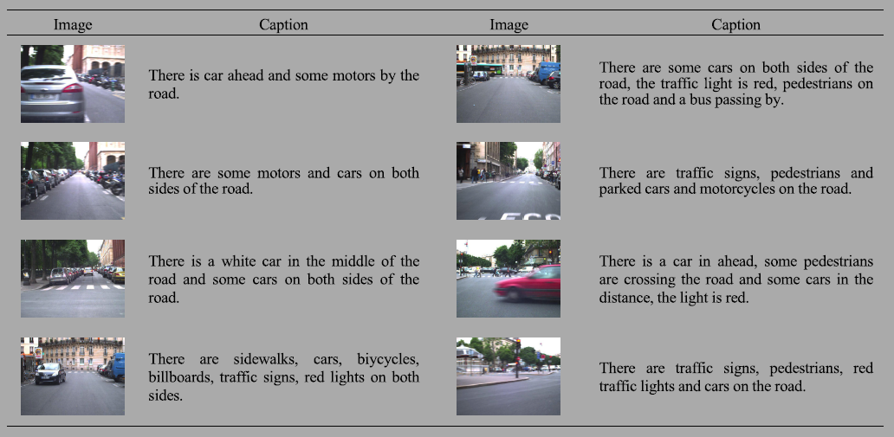
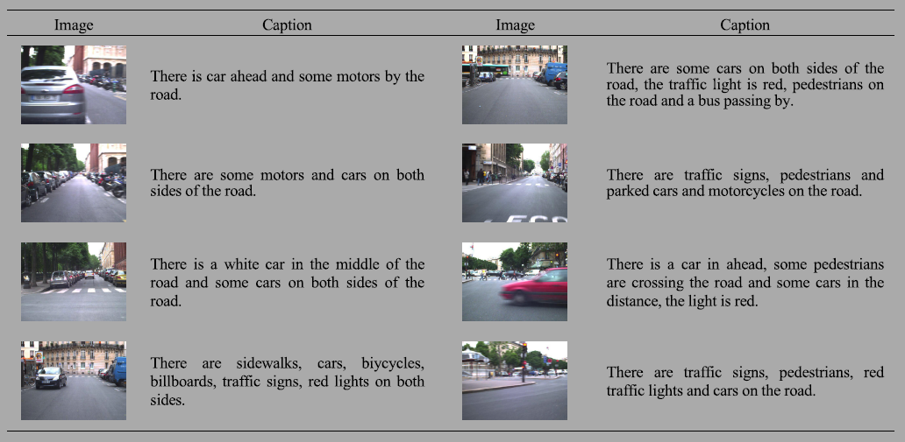

Successes
Data Preparation
The images of the LaRa Dataset [14] were used in the development of an image captioning dataset for traffic scene understanding. 11,178 images were annotated with an English.
Annotated SamplesThe images of the LaRa Dataset [14] were used in the development of an image captioning dataset for traffic scene understanding. 11,178 images were annotated with an English.
Annotated Samples
Observing the results from proposed model, we can see that the proposed models provides what appears to be a more clear description when assessing the scene in constrast to prior models.
The property multimodality in data creates redundancy in data which in turn protect against ambiguity. This is one of the many reasons why multimodality is important when developing models; however, there are challenges when dealing with multimodal information as indicated in the prior approaches using independent modules to be integrated for image captioning. Comparing the results of the existing and proposed solution, the proposed model's captions appear to be a mild improvement (more about this here) since the descriptions appear to provide a clearer suggestion.
This is one of the first attempts to apply image captioning to traffic scene understanding. Due to the lack of data, manual annotations were carried out of necessity.
Recalling from the results denoted in the Successes Section in "consolidating" the mutlimodal recognition modules. There is no explicit indication of a clear improvement (such as a larger BLEU score) BLEU score) when comparing the existing approach and the proposed approach. Qualification of the small sample demonstrate promising results using the proposed approach [17]; however, of evaluation of evaluation were not rigorous to evaluate how much different the proposed method was from the existing approach.
Reproduceability is important when evaluating new approaches to solving problems. Transparency is of even greater importance when considering the lack direct community involvement in the niche space of image captioning for traffic scenes. This may create more challenges for those interested in the space stiffling community involvement (more about this on Future Work).
Despite the BLEU score's popularity and wide usage in the Natural Language Processing (NLP) space, concerns have been raised about the validity of such a benchmark. For example, Matt Post raised concerns of the clarity of such a scoring metric pointing out some of the following issues:
Ehud Reiter carried out a structured review in 2018 exploring various papers focusing on evaluating whether or not BLEU operates as a sufficent proxy for human evalation . Correlation scores of BLEU-human evaluations were utilized as metrics of following the a similar classification of surrogate endpoints based on the IQWiG
Qualititative analyses were considered in evaluating BLEU weakness which found texts of rich language like Arabic, resulting in inappropriate penalties as a result of different adverbial placement.
IQWiG considers proxy endpoints to be valid if reliable validation studies show either med or high correlation with clinical outcomes. One of his findings was that BLEU-human correlation were a poor indicator for Natural Language Generation (NLG) as well as text-level classification; however, they were observed to be within reason for system-level correlations.
Furthermore, exploration of papers detailing BLEUs biases against certain technologies was carried out by Reiter. This raises quite a few concerns; however, such papers fell short in during Reiter's structured review due to the absence of disclosure of technologies with alleged biases.
A notable point is the wide range of BLEU-human correlations reported even when controlling for similarity of tasks thus raising points of concern such as the correlation of bleu and human evaluations being very much so dependent on the details of the systems evaluated such as the the particular text of a corpus as well as the particular protocol used during human evaluations
Ultimately, this raises concern of whether or not bleu validity of functioning as a proxy of human evaluation leading into the question of what is a "gold-standard" of human evaluation?
Reiter, closes out his review with conclusions that BLEU is decent method of evaluation that is limited to the space of MT (machine translation) systems . Justification for why BLEU is NOT appropriate when evaluating other types of NLP systems can be view as the following:
In closing, this raises many concerns such as the paper in which this project is extends from. More on future work can be found here [].